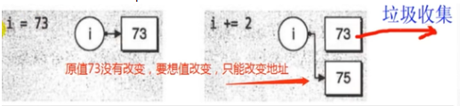
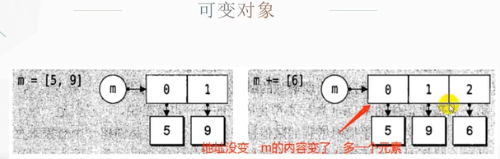
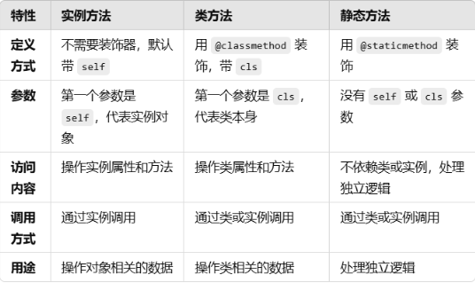
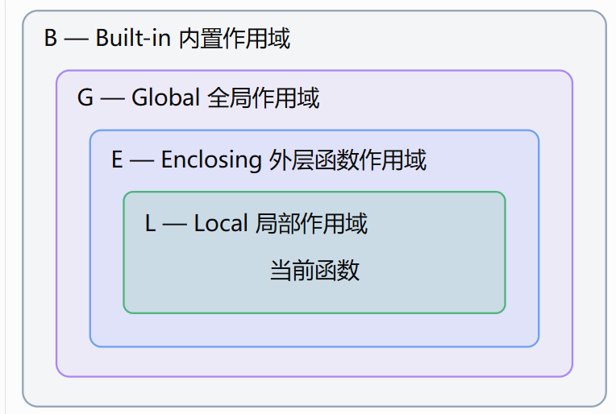
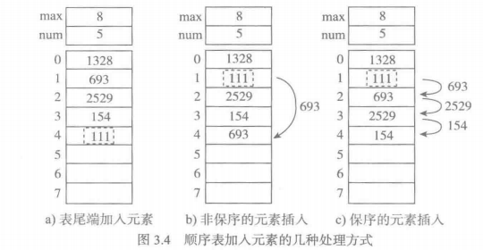
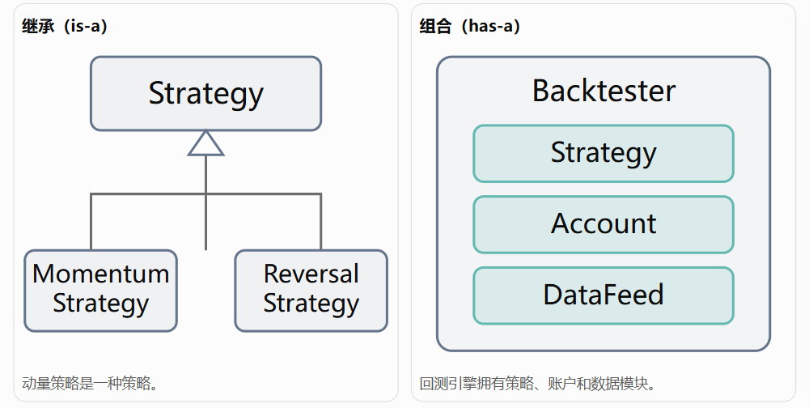
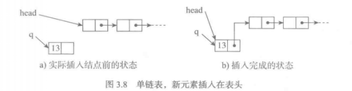

一、程序设计基础篇
1.1 变量与运算符
（1）变量标识符规范
- 标识符可使用英文字母、数字、下划线及 Python 允许的 Unicode 字符，例如“价格”；首字符不能是数字。不能是关键字
import keyword
keyword.kwlist- 常用的命名方式
- 大驼峰：UserName
- 小驼峰：userName
- 下划线命名：user_name
- 三引号（单引号或双引号）用在变量定义中，用以定义多行字符串内容
mutiple_str = '''
你好
我是一只DOG
'''
print(mutiple_str)
# 输出：你好
# 我是一只DOG（2）数据类型
- 常见数值类型有
int、float、complex。bool表示真假，也是int的子类。 - 常见内置类型还包括字符串
str、列表list、字典dict、元组tuple和集合set、不可变集合frozenset。number不是内置类型名。 isinstance(x, int)检查一个类型，isinstance(x, (int, float))检查多个类型。- 单元素元组写作
(element,)。
（3）可变对象与不可变对象
- 不可变对象创建后自身不能被原地修改。赋新值是让名称绑定到另一个对象，并不意味着旧对象移动，也不保证新建对象。常见例子：整数、字符串、元组。

- 可变对象允许修改自身的状态，而不必把变量名改为绑定另一个对象。对象内部的存储方式仍可随实现而变化。常见例子：列表、集合、字典。

（4）类型转换
- 想转换成什么类型，就用什么函数：
int(); str()……
#将列表转化为字典的方式
list_C = ['a','b','c']
list_D = [1,2,3,4]
zip_list = zip(list_C, list_D)
# zip() 返回惰性迭代器；默认在最短输入耗尽时停止
dict(zip_list)
# >>{'a': 1, 'b': 2, 'c': 3}（5）字符串类型
① 字符串运算
test_str = "Python"
test_str*2 # 'PythonPython'
test_str + 'AA' # 'PythonAA'
test_str[0] # 'P'
"y" in test_str # True② 字符串的编码
- 字符编码：本质是二进制数据与文字的一一对应
- 编码标准
- ASCII（美国信息交换标准编码）早期、无法表示汉字
- Unicode：一种新的编码标准，支持几乎所有书写系统
- 编码方式
- UTF-8（Unicode Transformation Format）最广泛，可以向后兼容ASCII码
③ encode() .decode() 的用法
- 在Python中，
.encode()和.decode()是用于处理字符串与字节序列之间转换的方法，特别是在涉及文本编码和解码时。.encode()将str转化为bytes，将文本数据转化为特定的编码格式，以便存储和运输
encoded_string = original_string.encode(encoding='utf-8', errors='strict')
# 输出的结果是b'<text>'，b为byte，代表文本已编码- 参数：
- encoding：指定要使用的编码格式，例如
'utf-8'、'ascii'、'latin-1'等。如果不指定，默认使用'utf-8'。 - errors：指定错误处理方式，如：'strict'（默认）：遇到无法编码的字符时引发UnicodeEncodeError。'ignore'：忽略无法编码的字符。'replace'：用替代字符（通常是 ?）替代无法编码的字符。
- encoding：指定要使用的编码格式，例如
decoded_string = byte_sequence.decode(encoding='utf-8', errors='strict')⑤ 字符串的索引与切片
slice_str = 'FINTECH'
print(slice_str[0:3]) # FIN
print(slice_str[0:3:1]) # FIN
print(slice_str[0:3:2]) # FN
# 切片的规则都是从左往右，如果是从右往左，程序可以运行，但是无结果输出
print(slice_str[-3:-1]) # EC
print(slice_str[1:-1]) # INTEC
print(slice_str[-3:]) # ECH
# 步长为负可以改变输出方向,但是ab也要调换顺序
print(slice_str[-1:-3:-1]) # HC
print(slice_str[::-1]) # HCETNIF⑥ 字符串查找与计数.find() & .count()
.find(substring, start, end)
.count(substring, start, end)
# 查找功能，返回第一次找到的索引值。未找到，返回-1
print(slice_str.find('F')) # 0
print(slice_str.find('FI')) # 0
print(slice_str.find('FI',1,2)) # -1⑦ 字符串修改
str.replace(old, new, count) 返回一个新的字符串
str.split(separator, maxsplit) 将字符串按照separator分割，返回一个列表
.capitalize() 首字母大写
.lower() 把所有大写变成小写
.upper() 把所有小写变成大写
.title() 把首字母大写
.strip/lstrip/rstrip() 删除两端空格
⑧ 字符串判断
.islower(); isupper(); isdigit()；startswith(); endswith()
- 判断是否全部为某值，输出True False
（6）列表类型
Python 中的列表（list）是一种有序、可变的数据结构，可以存储多个元素。列表中的元素可以是任意类型，例如整数、字符串、浮点数，甚至是另一个列表。
① 列表的索引和切片
同字符串，略
② 列表的增删改查
# 增（append insert extend）
list.append() #在列表末尾添加一个元素
list.insert(index, a) #在索引处插入
list.extend(list_another) # 拓展列表（extend接收任意可迭代对象，不局限于列表）
#如果不想改变原有list，可以采用加号的方式
# 删（del pop clear remove）
list_A = [1, 2, 3, 4, 5]
del list_A[2] # 删除索引为2的元素
print(list_A) # 输出: [1, 2, 4, 5]
# 删除一个范围
del list_A[1:3]
print(list_A) # 输出: [1, 5]
last_element = list_A.pop() # 删除并返回最后一个元素
print(last_element) # 输出: 5
print(list_A) # 输出: [1]
list_A.clear() #删除所有元素
list_A.remove(value) #删除列表中第一个匹配的元素
# 改
list_A[index] = value # 修改指定元素
list_A[1:3] = [10, 20, 30] # 切片赋值，可以改变列表长度
# 查
list_A.index(value) # 返回第一个匹配元素的索引
list_A.count(value) # 返回元素出现的次数
value in list_A # 判断元素是否存在
# 排序（sort sorted reverse）
sorted(list_A)
list_A.sort()③ 列表的排序
list.sort()作用于原列表，且只能作用于列表 ; sorted()可作用于任何可迭代对象，原列表不变
反转：list.reverse(), reversed()
list_A.sort(reverse=True) # 降序排序
list_A.sort(key=abs) # 按绝对值排序
sorted(list_A, key=abs) # 按绝对值排序，返回新列表④ 列表的推导式
列表推导式用于以简洁的方式从可迭代对象构造新列表，支持元素转换、条件筛选及嵌套循环。
list_P1 = []
for i in range(10):
list_P1.append(i)
#等价于
list_P2 = [i for i in range(10)]
#元组也可以使用推导式生成
tuple_P1 = (i**2 for i in range(100) if i % 2 == 0) #这样会生成生成器表达式，只有在迭代时才会显现，正确做法如下：
tuple_P1 = tuple(i**2 for i in range(100) if i % 2 == 0)
#字典也可以使用推导式生成
dict_P = {i:round(3.14*i,2) for i in range(21)}
# 条件表达式写法
[x if x > 0 else 0 for x in list_A]（7）元组类型
元组与列表的最大不同特点：元组不允许被修改，提高了代码编写的安全性。
num_tuple = (0,1,2)
num_tuple[0] = 1
# TypeError: 'tuple' object does not support item assignment
del num_tuple[2] # 不支持删除单个元素- 元组保存的元素引用不能替换。如果元素本身是列表，可以修改该列表的内容，元组本身仍是不可变对象。
- 如果想要定义单个元素元组，需要用这样的形式：
a = (10,),不加逗号输出的是int型
① 元组的查找
tuple.index() 查找某个数据，如果数据存在，则返回对应的索引，否则会报错
tuple.count(obj) 查找obj的次数
len() 统计长度
（8）字典类型
字典（dict）是 Python 中一种可变的映射类型，以键值对（Key-Value Pair）的形式存储数据，通过键访问对应的值。字典中的键必须唯一且可哈希，值可以是任意类型的对象，允许重复。
① 字典的定义
- 不要有重复的键
dict_A = {'age':20, 'gender':'male'}
dict_B = {} #定义空字典
dict_C = dict() #函数定义法② 字典操作
dict_A['age'] = 21 #改
dict_A['name'] = 'YY'#增
#有则覆盖，无则添加
len() #查看**键值对**的个数
dict_A.keys() #返回所有键的列表
dict_A.values() #同理
dict_A.items() #返回（key,value）列表③ 字典的遍历
for key in dict_A.keys():
print(key)
for value in dict_A.values():
print(value)
for key,value in dict_A.items():
print('{} = {}'.format(key,value))（9）集合类型
集合（set）是 Python 中一种无序、可变且元素唯一的容器类型。集合中的元素必须可哈希，不允许重复，不支持索引和切片操作。集合主要用于元素去重、成员判断，以及交集、并集、差集、对称差集等集合运算。
- 此外，Python 还提供不可变集合
frozenset，其元素在创建后不能增删，且自身可哈希，因此可以作为字典的键或其他集合的元素。 - 定义：
set_A = {1,2,3}；set_B = set()定义空集
① 集合的增删
set_A.add()
set_A.update(100) #错误，update的对象必须为可迭代对象
set_A.update([100]) #正确
#如果update的是字典，只会添加key
set_A.remove(100) #删除指定的数据
set_A.discard()
#remove和discard的区别在于：如果要删除的元素不在集合中，remove会抛出一个keyError异常
set_A.pop() # 返回删除的元素② 集合的∩与∪
a & b 交集； a | b 并集
（10）公共操作
- 拼接操作：字符串、列表、元组
- 复制操作：字符串、列表、元组
- in 和 not in：输出布尔值。字符串、列表、元组
- len()：全部适用
- del()
- max()
- min()
- range()
- enumerate()
for index,value in enumerate(list_A, start = 1):
print('{},{}'.format(index,value))（11）引用与拷贝
① 引用
- 赋值
b = a时，两个名称引用同一个对象。 - 两个值相等，不代表它们引用同一个对象。
② 拷贝（复制）
- 浅拷贝：只拷贝对象的引用，不复制对象本身。如果修改子对象，所有引用他的对象都会受到影响
- 深拷贝：复制对象及所有子对象，创建完全独立的样本
import copy
original_list = [1, 2, [3, 4]]
shallow_copied_list = copy.copy(original_list)
# 修改原始列表中的子列表
original_list[2][0] = 'Changed'
print(original_list)
print(shallow_copied_list)
[1, 2, ['Changed', 4]]
[1, 2, ['Changed', 4]]
# 浅拷贝的结果会受到影响，二者共用一个地址original_listB = [1, 2, [3, 4]]
deep_copied_listB = copy.deepcopy(original_listB)
# 修改原始列表中的子列表
original_listB[2][0] = 'Changed'
print(original_listB) # 输出: [1, 2, ['Changed', 4]]
print(deep_copied_listB) # 输出: [1, 2, [3, 4]]
#二者地址不同（12）格式化输出
.format()
num_1 = 22
num_2 = 45
print('{}+{}={}'.format(num_1,num_2,num_1+num_2))
# 22+45=67（13）转义字符
默认具有特殊意义的字符：
\n 换行字符
\t 制表位字符（Tab、四个空格）
需要输出“\、“、'”时，需要加上\来保证原样输出
end = "" 取消换行（14）运算符
- 常用算术运算的优先级：先算幂
**，再算乘、除、整除和取余* / // %，最后算加减+ -。 - 圆括号可以改变默认顺序。
2 + 3 * 4的结果是 14，(2 + 3) * 4的结果是 20。 - 增量赋值示例：对数值变量，
c += a相当于把c + a赋给c。
（15）输入
input([prompt]) 程序会等待用户的输入，输入完成后程序才会继续向下执行
- input会把接收到的任意用户输入的数据当做字符串进行处理
- 一般用一个变量进行承接
（16）日期与时间
- Python中用于处理时间和日期的模块：
time\datetime\ ……。datetime是日常日期与时间处理的核心模块，主要包含以下类型：
（17）迭代器
① 迭代器与迭代器协议
- 迭代器（iterator）的特点
- 惰性计算：不会一次性将所有数据加载到内存，而是按需计算
- 一次性：用完即废
- 大部分以列表或列表型为对象的参数都可以接收迭代器对象
- 生成器（generator）是创建迭代器的一种简单方法，生成器是一种特殊的迭代器。
- 迭代器协议是一种另对象可遍历的一种通用方式。
② yield方法创建生成器
def square(n = 10):
print('生成1至{}的平方'.format(n))
for i in range(1,n+1):
yield i**2 #使用yield而非return，目的是为了创建生成器，
gen = square()
print(gen)
# generator object square at 0x000001D9E285A880>
# 不会直接输出，当请求生成器的元素时，它才会执行代码
for x in gen:
print(x, end = ' ')
# 生成1至10的平方
# 1 4 9 16 25 36 49 64 81 100
# 注：这个生成器只能使用一次，如果希望重新生成，需要重新调用square()③ 生成器表达式
生成器表达式与列表表达式基本相似，括号不同：
gen = (x**2 for x in range(1,100))
for index, value in enumerate(gen):
print(index+1, value)生成器表达式可以直接作为函数的参数：
dict((i,i**2) for i in range(100))
sum(x**2 for x in range(1,100))（18）itertools模块
itertools.groupby(iterable, key)
- 根据每一独一的key，生成
(key,sub-iterator)元组 - 用法：
for key, sub in itertools.groupby(iterable, key): groupby()只对相邻的元素按key分组。如果希望按同一个键合并分组，先用sorted()按同一个键排序。
import itertools
students_scores = [
('Alice', 85),
('Bob', 92),
('Charlie', 85),
('David', 90),
('Eva', 92),
('Frank', 75),
('Grace', 90),
]
scores = lambda x : x[1] #对列表中每一个元素（元组），取出第二个即分数
sorted_students = sorted(students_scores, key = scores) #先排序
for score, group in itertools.groupby(sorted_students, scores):
print(score, list(group))
#如果希望按照ABC进行分组，可以先：
def grade_key(x):
if x[1] >= 90:
return 'A'
elif x[1] >= 80:
return 'B'
else:
return 'C'
#之后将函数改为grade_key就可以了
#注：如果希望永久储存，可以使用list.append()方法itertools.product 其实就是一个高效生成“笛卡尔积”的工具，相当于多层嵌套 for 循环的懒加载版。
from itertools import product
for p in product([1, 2], ['a', 'b']):
print(p)
(1, 'a')
(1, 'b')
(2, 'a')
(2, 'b')（19）random模块
random 模块是 Python 内置的用于生成随机数和进行随机操作的工具包
import random
random.random() # 生成[0,1)之间的随机浮点数
random.ranint(a,b) # 生成[a,b)之间的整数
list_A = [0,1,2,3]
random.choice(list_A) # 随机选取费控序列中的一个元素
random.shuffle() # 打乱（就地打乱，无返回值）
random.uniform(a,b) #均匀分布
random.gauss(mu,sigma) #高斯分布1.2 判断与循环
（1）IF与比较
if 根据条件表达式的真值（Truth Value）决定是否执行代码。
以下对象在布尔判断中被视为 False：
False、None；- 数值零，如
0、0.0、0j； - 空序列与空容器，如
''、[]、()、{}、set()； - 自定义类型中，
__bool__()返回False或未定义__bool__()且__len__()返回0的对象。
其他对象通常被视为 True。可以通过 bool() 进行真值转换。
（2）逻辑运算符
and 与；or 或；not 非
短路求值：and 和 or 在左侧操作数已能决定结果时，不再计算右侧表达式。
（3）for、while循环
for：依次遍历可迭代对象中的元素，如列表、元组、字典、集合、字符串、生成器等。直接遍历字典时，默认遍历其键。- while循环：在条件为真的情况下重复执行代码块
- 二者都支持
break和continue语句- break：直接跳出循环
- continue：跳过当前循环的剩余部分，开始下一次迭代
-
else：当循环正常结束（迭代耗尽或条件变为假）时执行；通过break退出时不执行。# 用for循环生成一个99乘法表 for i in range(1,10): for j in range(1,i+1): print('{}*{}={}'.format(i,j,i*j),end = '\t') # end 添加制表位，不换行 print() # 用于每行结束后进行换行 # 一个例子：设计一个简单的游戏程序。程序会随机生成一个0到100之间的整数，并要求用户猜测这个数字。根据用户的输入，程序会给出提示，告诉用户猜测的数字是 "too high" 还是 "too low"。用户有 5 次机会，如果用户在 5 次内猜对了数字，则输出 "Congratulations! You guessed it right!"，如果 5 次机会用完了还没猜对，则输出 "Game over! The number was X"，其中 X 是正确的数字。 import random corr_num = random.randint(0,100) max_tries = 5 user_tries = 0 # 第一步先完成猜测的循环逻辑 while user_tries < max_tries: guessed_num = int(input('Please input your number:')) if guessed_num == corr_num: break else: user_tries += 1 if guessed_num > corr_num: print('Too High, {} times left!'.format(max_tries - user_tries)) if guessed_num < corr_num: print('Too Low, {} times left!'.format(max_tries - user_tries)) # 将胜负判断的逻辑摘出，这样可以更加清晰 if user_tries < max_tries: print('Cong!') else: print('Sry, the correct number is {}'.format(corr_num))
（4）三元表达式
if else的简便写法，但是会牺牲可读性
true-expr if condition else false-expr1.3 函数篇
函数是将具有独立功能的代码封装为可调用对象的一种方式，有助于实现代码复用、功能抽象、模块化及降低程序复杂度。
- 函数标识符：与变量的命名规范相同
- 当函数有多个返回值的时候，返回的是元组
def FuncTypeTest(): return 1,'Func',2.2 type(FuncTypeTest()) # tuple
（1）函数传参
- 形参（Parameter）：函数定义时声明的名称
a、b。 实参（Argument）：函数调用时提供的值或表达式10、20。 - 实参有两种传递方式：位置实参（
f(20)）和关键字实参（f(a=20)） - Python 根据参数所允许的传递方式，将形参划分为五种类型：

- 完整的参数定义顺序为：

- 必选参数与默认参数：调用函数时是否必须为某个形参提供实参
- 对于位置参数，必选参数必须位于默认参数之前
- 仅限关键字参数不受这一规则限制，因为它们通过名称进行匹配，不存在位置上的歧义。
def func(a, b=10, c=20): # 正确 pass def func(a=10, b, c=20): # SyntaxError pass def func(a=10, *, b, c=20): # 正确 pass
（2）变量的作用域
作用域指的是变量可以生效的范围：

- 函数内赋值通常创建局部绑定；在未赋值的情况下，可以直接读取全局名称。
- 重新绑定全局名称需要
global；若只是修改该名称所指向的可变对象（如items.append(x)），不需要global。global_var = 20 def Func_test_1(): global_var = 10 print(global_var) Func_test_1() print(global_var) # 输出 10、20：函数里的赋值创建了局部名称，没有重新绑定全局变量 global：在函数内部声明全局变量global_var = 20 def Func_test_1(): global global_var # 把a声明为全局变量 global_var = 10 print(global_var) Func_test_1() print(global_var) print # 两个输出的都是10，说明global声明后，在函数内部可以修改全局变量nonlocal与嵌套函数Python 支持嵌套函数（函数内部再定义函数）。内嵌函数可以访问外层函数的变量，但不能修改，除非使用 nonlocal 关键字。
- 与global的区别：nonlocal 只影响嵌套函数中的外层函数的局部变量，而不会修改全局变量。
（3）匿名函数（lambda函数）
主要用于定义一些简单的函数，通常用于让代码更加简洁。这个在pandas里面比较常用
f = lambda x: x ** 2
f(3) # 9（4）拓展：与函数结合的操作
map()用于对可迭代对象的每个元素应用一个函数，并返回一个包含结果的迭代器。map(func, iterable)filter(func, iterable)保留使函数结果为真的元素，返回一个迭代器。reduce(func, iterable)对元素依次累积运算，直接返回最终累积结果。from functools import reduce list_origin = list(range(30)) list_square = list(map(lambda x: x ** 2, list_origin)) list_even = list(filter(lambda x: x % 2 == 0, list_origin)) result = reduce(lambda x, y: x + y, list_origin)
（5）补充：类型注解与Docstring
- 类型注解用于标注变量、函数参数及返回值的预期类型；对于代码可读性、IDE 自动补全和静态类型检查都非常重要！
- 现代 Python 开发中，推荐优先使用内置类型和
collections.abc提供的抽象类型，在需要更复杂的类型表达时再使用typing。
- 现代 Python 开发中，推荐优先使用内置类型和
- 文档字符串（Docstring），用于描述函数的功能、参数、返回值及可能抛出的异常。注释不规范，亲人两行泪。
- 并不是所有函数都需要完整的类型注解和docstring, 主要还是看场景选择。
from typing import Literal from collections.abc import Sequence, Callable def calculate( data: Sequence[float], method: Literal['mean', 'sum'] = 'mean', decimals: int | None = None, transform: Callable[[float], float] | None = None ) -> float: """对输入数据进行转换与统计计算。(这里以Google Style Doc string 为例) Args: data: 待计算的数值序列。 method: 统计方法，支持均值和求和，默认为 'mean'。 decimals: 结果保留的小数位数，None 表示不进行舍入。 transform: 统计计算前对每个元素应用的转换函数。 Returns: 统计计算结果。 Raises: ValueError: method 不属于支持的统计方法。 ZeroDivisionError: data 为空且 method 为 'mean'。 Examples: >>> calculate([1.0, 2.0, 3.0], method='mean') 2.0 """
1.4 错误与异常处理
（1）基本语法
- 作用：在运行失败时可以优雅地返回参数
- 基本结构
def attempt(): try: risky_code #可能会引发错误的语法 except: handle_exception #当错误的情况下，如何解决 else: if_no_fault #如果没有错误，可用else承接 finally: #无论是否发生异常，finally代码块中的内容都会被执行 pass - 可以在except后指定异常类型，或者用元组捕获多个异常，如果不进行指定，except会捕获所有异常。
- 可以用多个except块捕获多个异常
（2）Ipython中的异常
当在ipython中执行语句发生报错时，ipython会默认打印完整的报错追溯，会将堆栈中每个错误点附近的上下几行代码打印出。
1.5 文件与操作系统
（1） open()方法
- 在数据分析中，一般采用的
pd.read_csv()的方式与文件进行交互，因此用Python原生的方式进行文件处理的场景并不多，但是还是很重要。 - 一般使用
with open() as f的方式处理文件，当with语句结束后，可以将文件自动释放回操作系统，而不用使用close() - 用read读取文件
#这里的r为默认的只读模式 with open(path, 'r', encoding = 'utf-8') as f: content = f.read() print(content) - 把文本提取到列表中（按照每行）：
with open(path, 'r', encoding = 'utf-8') as f: list_txt = [] for line in f: list_txt.append(line.rstrip())
（2）os库
【本节待补】
1.6 面向对象编程
（1）两大思想：面向过程和面向对象
面向过程（Procedural Programming）和面向对象（Object-Oriented Programming，OOP）是两种常见的程序设计范式。Python 是一种比较灵活的语言，两种思想可以结合使用，无须将所有代码都封装成类。

（2）基础概念
- 类：是一个蓝图或模板，用于定义对象的属性和行为
- 对象：是类的实例，具有类的属性和方法
- 封装：把属性和方法封装到类里
- 继承：子类继承父类的属性和方法
- 多态：同一方法在不同对象上可能表现不同的行为
- 抽象：提取对象的核心特征和公共接口，忽略不必要的实现细节。
（3）类的定义与实例化
- 创建对象并调用方法：
self是对象自身的引用，必须作为第一个参数传入类的方法
class Person: # 方法是类内部的函数 def say_hello(self): print("Hello, I am a Person!") person1 = Person() # 实例化 person1.say_hello() # 调用方法，输出：Hello, I am a Person! - 构造函数
__init__是一个特殊的方法，在创建对象时自动调用，用于初始化对象的属性。class Person: def __init__(self, name, age): self.name = name self.age = age def introduce(self): print('My name is {self.name},my age is {self.age}.') person1 = Person() person1.introduce()
（4）实例属性与类属性
- 实例属性可在
__init__中通过self定义。- 每个对象都有独立的实例属性，互不干扰
- 类属性定义在类的顶层，属于整个类
class Cats: species = 'felid' def __init__(self, name, age): self.name = name self.age = age # 实例化 catyie = Cats("Catyie", 2) # 调用类属性 catyie.species Cats.species # 两种调用方法返回同样的结果 # 调用实例属性 catyie.name catyie.age
（5）实例方法、类方法与静态方法

class Counter:
count = 0 # 类属性
def _init_(self):
Counter.count += 1
# 实例方法
def get_instance_count(self):
return f'This instance is #{Counter.count}.'
# 类方法：获取当前计数
@classmethod # 装饰
def get_total_count(cls):
return f'Total instances created:{cls.count}'
# 静态方法：比较
@staticmethod
def compare(a,b):
pass
c1.Counter()
c2.Counter()
c1.get_instance_count() # 实例方法
Counter.get_total_count() # 类方法
Counter.compare(10,5) # 静态方法- 类方法的另一个重要用途是提供替代构造方法（Alternative Constructor），例如：
class Person: def __init__(self, name: str, age: int) -> None: self.name = name self.age = age @classmethod def from_string(cls, data: str): name, age = data.split(',') return cls(name, int(age)) person1 = Person.from_string(',23')
（5）继承、子类与父类
继承是子类从父类获取属性和方法的过程，子类继承了父类的功能，可以直接使用父类的已有代码，也可以扩展或修改它。
class ParentClass:
# 父类代码
pass
class ChildClass(ParentClass):
# 子类代码
pass方法重写（Override）：子类可以直接使用父类已有的方法，也可以重新定义这些方法，以改变或扩展父类的行为。
- 完全重写：替换父类行为
class Strategy: def generate_signal(self) -> int: return 0 class MomentumStrategy(Strategy): def generate_signal(self) -> int: return 1 - 扩展重写：通过
super()调用继承体系中的后续实现，并在此基础上增加新的功能class ParentClass: def introduce(self) -> None: print('I am Parent.') class ChildClass(ParentClass): def introduce(self) -> None: super().introduce() print('I am also Child.') child = ChildClass() child.introduce() # I am Parent. # I am also Child. - 重写
__init__()：比较常用的场景class Person: def __init__(self, name: str, age: int) -> None: self.name = name self.age = age class Student(Person): def __init__(self, name: str, age: int, school: str) -> None: super().__init__(name, age) self.school = school student = Student('YY', 23, 'HITWH') - 可以使用
Class.mro()查看方法解析顺序
（6）多态
鸭子类型（Duck Tying）：如果一个东西走起来像鸭子，叫起来像鸭子，那么就可以把它当作鸭子使用。这就是多态思想：不同类型的对象能够响应相同的接口，但具有不同的具体实现。多态使调用者无须关心对象的具体类型和内部实现，从而降低代码耦合，提高可扩展性。
class Dog:
def speak(self):
return 'Woof'
class Cat:
def speak(self):
return 'Meow'
def make_sound(animal):
return animal.speak()
make_sound(Dog()) # Woof
make_sound(Cat()) # Meow
# Dog 和 Cat 没有任何显式定义的继承关系，但都具有 speak() 方法，因此都可以传入 make_sound()。（7）组合
组合（Composition）指通过在一个对象中持有其他对象，实现功能复用与对象协作，通常用于表达 has-a（拥有） 关系。
class Backtester:
def __init__(self, strategy: Strategy) -> None:
self.strategy = strategy
def run(self) -> None:
signal = self.strategy.generate_signal()
print(signal)
- 优先考虑组合而非继承是一种常见的软件设计原则，但不是绝对规则
（8）封装
与 Java、C++ 不同，Python 没有传统意义上的 public、protected、private 访问权限关键字，主要通过命名约定和名称改写机制进行区分。

# 第一种：单下划线向其他开发者传达一个信息：该属性属于内部实现，不属于承诺稳定的公共接口。
class Account:
def __init__(self, balance: float) -> None:
self._balance = balance
account = Account(10000)
account._balance # 10000
# 第二种机制比较复杂，Python 会自动将 __balance 改写为 _Account__balance，这一机制称为名称改写（Name Mangling）。
class Account:
def __init__(self, balance: float) -> None:
self.__balance = balance
account = Account(10000)
account.__balance # AttributeError
account._Account__balance # 10000- Getter、Setter与
@propertyGetter负责获取属性值；Setter：负责修改属性值。这种方式能够实现封装，但 Python 提供了更自然的写法：
class Person: def __init__(self, age: int) -> None: self.age = age @property def age(self) -> int: return self._age @age.setter def age(self, value: int) -> None: if value < 0: raise ValueError('Invalid age.') self._age = value person = Person(24) person.age # 调用 getter person.age = 25 # 调用 setter person.age = -1 # ValueError- 如果只定义
@property，不定义对应的 Setter，就可以提供一个只读的公共属性。 @property并不一定对应某个实际存储的实例属性，也可以动态计算结果。
- 如果只定义
（8）魔术方法
魔术方法也称特殊方法，是Python中具有双下划线命名形式的特殊方法，用于支持内置函数、运算符及其他语言机制。（Very Pythonic）
- 举例：
len()方法其实是调用了列表内部的__len__()，既然列表可以定义__len__()，我们自己创建的类也可以：class Portfolio: def __init__(self, assets: list[str]) -> None: self.assets = assets def __len__(self) -> int: return len(self.assets) portfolio = Portfolio(['T', 'TF', 'TS', 'TL']) len(portfolio) # 4 - 对象创建：
__new__与__init__：__new__()必须返回对象才能将其作为创建结果，而__init__()只能返回None。（new这个方法很少见） - 对象表示：
__str__与__repr__# 如果没有自定义对象表示，直接打印自定义类的实例，通常只能得到类似以下内容： # <__main__.Person object at 0x000001ABC> # 通过重写这两个方法，可以自定义对象的字符串表示。 class Person: def __init__(self, name: str, age: int) -> None: self.name = name self.age = age def __str__(self) -> str: return f'{self.name}, {self.age} years old' def __repr__(self) -> str: return f'Person(name={self.name!r}, age={self.age!r})' person = Person('YY', 24) print(person) # YY, 24 years old repr(person) # "Person(name='YY', age=24)" - 运算符重载：通过定义特殊方法，使自定义对象支持 Python 的运算符，并赋予其符合业务语义的运算行为。（略）
- 容器协议：使自定义对象支持索引、赋值、长度查询、成员判断
class Portfolio: def __init__(self, assets: list[str]) -> None: self._assets = assets.copy() def __len__(self) -> int: return len(self._assets) def __getitem__(self, index: int | slice) -> str | list[str]: return self._assets[index] def __setitem__(self, index: int, value: str) -> None: self._assets[index] = value def __contains__(self, item: str) -> bool: return item in self._assets portfolio = Portfolio(['T', 'TF', 'TS', 'TL']) len(portfolio) # 4 portfolio[0] # 'T' portfolio[1:3] # ['TF', 'TS'] portfolio[0] = 'T2703' 'TL' in portfolio # True - 迭代器协议：
__iter__()：返回一个迭代器；__next__()：返回迭代器的下一个元素 - 可调用对象：
__call__：可以使类的实例像函数一样被调用
（9）抽象类、Protocol与Dataclass
① 抽象类
不同的策略只要实现了一个公有方法，就可以被引擎调用。但是如果某个开发者忘记实现这个方法，程序可能直到运行时调用该方法才报错。抽象类就是为了解决这类接口约束问题。
- 存在尚未实现的抽象方法的类不能被实例化。
- 抽象类可以同时包含抽象方法、普通方法、实例属性及类属性。
- 抽象方法本身也可以包含具体实现。
# ABC：用于建立抽象基类。 @abstractmethod：将方法标记为抽象方法。
from abc import ABC, abstractmethod
class Strategy(ABC):
@abstractmethod
def generate_signal(self) -> int:
pass
class MomentumStrategy(Strategy):
def generate_signal(self) -> int:
return 1
Strategy() # TypeError
MomentumStrategy() # 正常实例化② Protocol
Protocol 是 typing 模块提供的一种结构化类型约束机制，用于描述一个对象应当具备哪些属性和方法。通过检查不需要显式继承父类。
③ 数据类 dataclass
有些类的主要职责就是存储结构化数据（充当一个数据容器），Python 3.7 引入了 dataclasses 标准库，通过 @dataclass 自动生成这些常用方法。

from dataclasses import dataclass, field, asdict
@dataclass
class StrategyConfig:
window: int = 20
threshold: float = 0.05
assets: list[str] = field(default_factory=list)
def __post_init__(self) -> None:
if self.window <= 0:
raise ValueError('Window must be positive.')
config = StrategyConfig(assets=['T', 'TL'])
asdict(config)
# {'window': 20, 'threshold': 0.05, 'assets': ['T', 'TL']}1.7 Python进阶
（1）装饰器
- 一个最简单的装饰器的例子：
def simple_decorator(func):
# 传入一个函数作为参数d
def wrapper():
print("即将执行函数...")
func()
print("函数执行完毕。")
return wrapper # 返回wrapper
@simple_decorator
def greet():
print('你好')
# 调用
greet()装饰器语法 @simple_decorator 等价于以下赋值：
greet = simple_decorator(greet)- 上面的赋值得到
wrapper闭包；它保留对外层func的引用。 - 通用包装函数可用
wrapper(self, *args, **kwargs)接收方法参数。 - 如果还要给装饰器本身传参，则用三层函数：
def record_step(name): # （1）外层：接受一个 name 参数，告诉装饰器你要记录哪一步
def decorator(fn): # （2）中层：真正的装饰器，接受被装饰的函数 fn
def wrapper(self, *args, **kwargs): # （3）内层：把 fn 包起来的「外衣」
res = fn(self, *args, **kwargs) # — 执行原函数，拿到返回值
self.step_outputs[name] = res # — 记录结果到实例属性里
return res # — 再把原函数的返回值交还出去
return wrapper # 把 wrapper 这个新函数返回
return decorator # 把 decorator 返回，供 @record_step 用（2）asyncio异步并发
基本语法
import asyncio
async def foo():
print("start")
await asyncio.sleep(1)
print("end")
# 并发运行
async def main():
tasks = [foo(), foo(), foo()]
await asyncio.gather(*tasks) # 并发执行
asyncio.run(main())async def关键字表示该函数为协程函数gather可以让多个协程“同时”跑，遇到await会自动切换任务。run会创建事件循环（event loop），并执行到完成。
（3）CLI程序与argparse库【待迁移】
CLI（Command Line Interface），命令行接口。用户通过在终端中输入文本命令，向程序传递指令、参数和选项，程序根据这些输入执行相应操作。
它的核心语法是：
命令 主程序 位置参数 可选参数
① 常见文件与目录操作
pwd # 查看当前目录
ls # 查看目录内容
ls -l # 以详细格式显示
ls -a # 显示隐藏文件
ls -lh # 以更易读的单位显示文件大小
cd project # 进入某个目录
cd .. # 返回上一级目录
cd ~ # 返回用户主目录
mkdir data # 创建文件夹
mkdir -p data/raw/stock # 创建多级目录
# ……CLI 的核心价值在于：把程序的运行逻辑参数化。假设没有 CLI，可能需要在代码里手动修改参数, 如果修改参数，就要改源代码，这对于一个成体系的项目来说非常不利。在量化研究、机器学习、数据处理项目中，CLI 是非常常见的工程入口。
② argparse库
argparse 是 Python 标准库中用于解析命令行参数的模块。
import argparse
# 第一步，创建解析器
parser = argparse.ArgumentParser()
'''
解析器负责规定：
程序允许接收哪些参数；
每个参数是什么类型；
是否必须提供；
默认值是什么；
帮助文档如何显示。
'''
# 第二步，注册参数
parser.add_argument("--epochs", type=int, default=10)
parser.add_argument("--lr", type=float, default=0.01)
parser.add_argument("--mode", type=str, choices=["train", "test"])
# 第三步，解析参数
args = parser.parse_args()
# 现在这些参数就是args的“属性”
def main(args):
if args.mode == 'train':
pass
if __name__ == "__main__":
args = parse_args()
main(args)（4）调度器Scheduler【待迁移】
调度器是一类用于按照预定规则触发、管理和监控任务执行的程序机制。
调度器 scheduler
↓
任务 task / job
↓
命令 command
↓
脚本 script
↓
函数 functionCLI 是程序的入口，argparse 是入口参数的解析器，调度器是自动按规则调用这个入口的管理者。
（5）Git与版本控制【待迁移】
本节待补。
（6）Docker基础【待迁移】
本节待补。